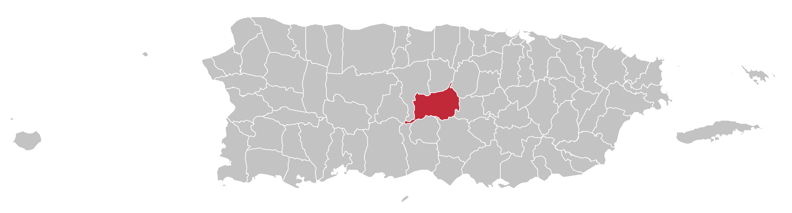

Mapa
Orocovis se ubica en el área central de Puerto Rico, entre pueblos como Ciales, Morovis, Barranquitas, Coamo y Villalba.


Orocovis está en el centro montañoso de Puerto Rico y se conoce como el Corazón de Puerto Rico. Sus carreteras pasan entre vistas de la Cordillera Central, ríos, lagos y lugares de aventura que invitan a detenerse, mirar y respirar aire fresco.
El pueblo combina naturaleza, cultura musical, gastronomía criolla y atracciones como Toro Verde, el Chorro de Doña Juana y el Miradero Villalba-Orocovis. Es un destino ideal para visitar con familia, hacer fotografías y conocer una parte muy auténtica de la isla.

Orocovis se ubica en el área central de Puerto Rico, entre pueblos como Ciales, Morovis, Barranquitas, Coamo y Villalba.
Sus franjas verdes, blancas y azules resaltan la identidad histórica del municipio y su relación con el centro de la isla.
El escudo incluye símbolos de herencia taína, agricultura, puentes, ríos y el sol que representa sus regiones.

El letrero de bienvenida recuerda el orgullo de un pueblo ubicado en el centro geográfico de la isla.

Una cascada muy fotografiada y rodeada por el ambiente fresco del Bosque Estatal Toro Negro.

Desde sus alturas se aprecian montañas, valles y, en días claros, vistas hacia ambas costas.
Músico y director de salsa nacido en Orocovis, conocido como El Rey del Bajo.
Cantante de merengue y música tropical, reconocido como El Rey de Corazones.
Cantautor puertorriqueño ligado a la tradición jíbara y a la música cultural del país.